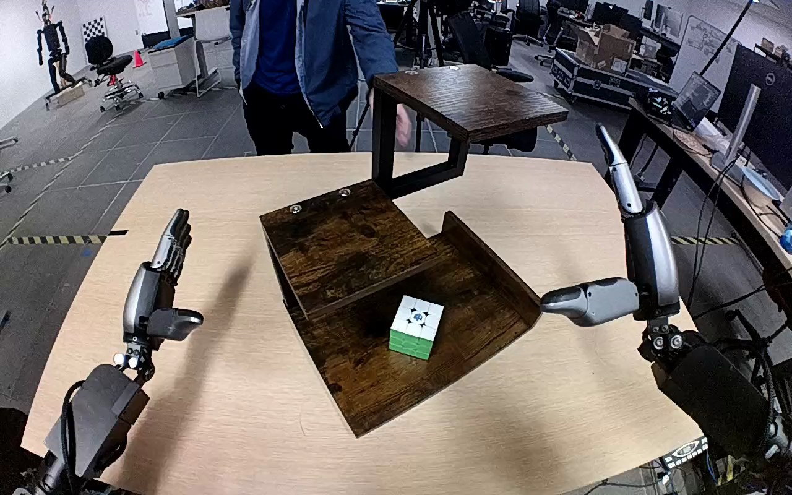

NVIDIA GR1 · 41
Video 41

Visual review action_review.json
{
"prompt_protocol": "humanoid_action_v1",
"prompt_provenance": "visually_authored_from_video_and_initial_frame",
"reviewed_contact_sheets": [
"sheet_001.jpg"
],
"inspected_frame_stride": 2,
"inspected_sampled_frame_count": 60,
"initial_scene": "Robot egocentric view between two visible forearms and inward-facing thumbs. A multicolored 3-by-3 cube rests on the bottom level of a three-level wooden shelf. A person stands opposite the robot and touches the shelf.",
"observed_sequence": [
{
"frame_interval": [
0,
12
],
"action": "Person repositions and rotates the wooden shelf on the tabletop while the cube stays on the bottom level; robot hands remain open on either side.",
"confidence": "high"
},
{
"frame_interval": [
13,
22
],
"action": "Person turns/repositions the cube on the bottom shelf, leaving a green face upward, then withdraws their hand.",
"confidence": "high"
},
{
"frame_interval": [
23,
46
],
"action": "Right forearm reaches inward toward the bottom shelf; the right hand closes its fingers and thumb around opposing sides of the cube. Left hand remains clear.",
"confidence": "high"
},
{
"frame_interval": [
47,
64
],
"action": "Right hand secures the cube on the bottom shelf; it begins lifting while the thumb and fingers maintain the grasp.",
"confidence": "high"
},
{
"frame_interval": [
65,
90
],
"action": "Right arm lifts the cube fully clear of the bottom shelf and raises it past the middle level toward the top level.",
"confidence": "high"
},
{
"frame_interval": [
91,
108
],
"action": "Right hand carries the cube over the top level and lowers it toward the wooden surface.",
"confidence": "high"
},
{
"frame_interval": [
109,
119
],
"action": "Cube is set upright on the top surface. Right fingers open above the cube and remain close to it; no subsequent withdrawal is visible.",
"confidence": "high"
}
],
"arm_hand_roles": {
"right": "Active manipulator: grasps cube on bottom level, lifts and raises it, sets it upright on top level, and opens fingers above it.",
"left": "Remains open beside the table and does not touch the cube, shelf, or right hand.",
"person": "Positions shelf and turns cube at the beginning, then withdraws; no hand-to-hand transfer or assistance during the robot lift."
},
"anatomical_side_evidence": "The camera is between the robot forearms, looking outward over the table. Both forearms emerge from the corresponding near-body lower corners; both thumbs point inward toward the center. This egocentric arm arrangement establishes the image-right forearm as anatomical right and image-left as anatomical left. Shoulder/torso attachment is outside the crop; visible forearm orientation and thumb handedness support the convention independently of the source caption.",
"coordination": "Single-hand manipulation. The left hand stays clear; the person finishes preparation before the robot grasps the cube. No transfer or simultaneous two-hand support occurs.",
"terminal_state": "The cube stands upright on the top wooden shelf. Right fingers have opened above it while the hand remains nearby; the left hand remains clear. The bottom and middle shelf levels are empty.",
"uncertainties": [
"The right hand partly occludes the cube top and rear during the final opening; complete separation of every finger and a subsequent arm withdrawal are not shown. The cube bottom is visibly on the top shelf."
],
"annotation_discrepancies": [],
"evidence_frame_indices": [
0,
18,
46,
64,
76,
90,
108,
114,
116,
119
],
"selected_execution_status": "success",
"video_id": "41",
"dataset": "NVIDIA_GR1_100",
"dedicated_review_agent": "review_gr1_41",
"review_source_video": "NVIDIA_GR1_100/41/original/original.mp4",
"source_frame_count": 120,
"source_fps": 20.0,
"native_detail_frames": [
18,
46,
64,
76,
90,
108,
114,
116,
119
],
"world_model_prompt": "A person positions the wooden shelf and turns the Rubik's cube on its bottom level, then withdraws their hand. The robot grasps the cube with its right hand, lifts it clear of the bottom shelf, raises it to the top level, and sets it upright there, opening its fingers above the cube. Keep the camera fixed; preserve robot geometry, physically valid joint motion, and normal gripper opening and closing.",
"original_task_instruction": "Use the right hand to pick up rubik's cube from bottom level of the wooden shelf to top level of the wooden shelf.",
"selected_segment": {
"start_frame": 0,
"end_frame_exclusive": 120,
"reason": "Complete original single-task reference; no cropping or trimming requested."
},
"source_video_sha256": "3d9a309bd339e36925267339a8643f4e4c0d9e3891146f2ad1079a17bdef2229",
"review_completed_at": "2026-10-13T18:07:25.412196+00:00"
}